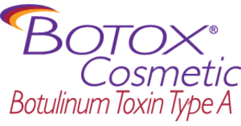

Dermal Fillers and Facial Aesthetics
With every furrow of your brow and squinting of your eyes, you are slowly developing facial lines and wrinkles that become deeper and more noticeable with age. Injectable botulinum toxins like Botox Stuart Florida have become extremely popular for men and women over the age of 18 looking to slow and prevent the first visible signs of aging.
Dr. DeLucia provides these non-surgical injectable treatments for those looking to treat common problems such as:
- Frowns lines
- Forehead lines and wrinkles
- Crow's feet
Botulinum toxins are often used as a first line of defense against aging, with more invasive facial procedures, like a facelift, later down the road.
How Do They Work?
With every expression we make on our face, underlying muscles contract, push and pull the skin into a fold. Over time, this repeated folding results in visible lines and wrinkles. Injectable treatments like Botox, Xeomin, and Dysport use botulinum toxin type A to relax these facial muscles to prevent the development of future wrinkles and improve the appearance of existing ones. These treatments are also often combined with non-surgical dermal fillers for a fuller rejuvenation of one’s appearance.
An injectable treatment with Dr. DeLucia will last about half an hour. During your consultation, you will be asked about your expectations so that he understands the look that you would like to achieve. Dr. DeLucia strives to maintain a natural appearance with his treatments to avoid side effects that are common when administered by untrained physicians. Once your treatment is complete, you can get back to your daily routine without any downtime, and will gradually notice a more youthful appearance of your face. The results of your treatment will last for up to six months.
Listed below are the botulinum toxin injectable treatments that Dr. DeLucia offers to patients.
- BOTOX® Cosmetic
- Radiesse®
- JUVÉDERM®
- XEOMIN®
BOTOX® Cosmetic

When it comes to non-surgical injectables, BOTOX has become a household name. Definitely one of the more popular treatments, BOTOX has developed a reputation as an essential tool to maintain a youthful appearance for celebrities, business professionals, and the everyday person. BOTOX also has been approved for non-aesthetic medical purposes including the treatments of excessive sweating, overactive bladder, Chronic Migraine, and muscle spasms.
RADIESSE®
RADIESSE wrinkle filler instantly corrects facial wrinkles to give you a natural, younger look that lasts. if it sounds like magic, that's because it is. Actually, the magic ingredient is you.™ RADIESSE wrinkle filler stimulates your body tp produce your own natural collagen to restore fullness and smooth out the signs of aging. And in many patients, the results may last a year or more.
JUVÉDERM®
JUVÉDERM is a dermal filler for injection into areas of facial tissue where moderate to severe facial wrinkles and folds occur to temporarily add volume to the skin, especially around the nose and mouth.
XEOMIN®

New on the market, XEOMIN uses the same botulinum toxin for treating wrinkles; however, it doesn’t contain some of the accompanying proteins that are found in BOTOX.
Get started on a younger-looking you. Call for an appointment today!